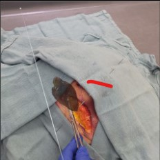
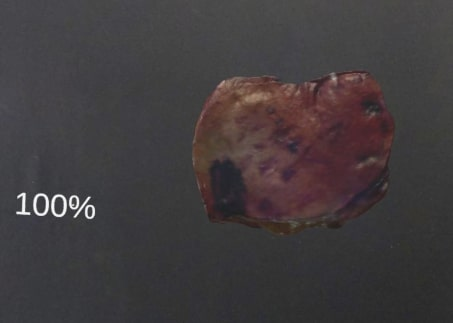
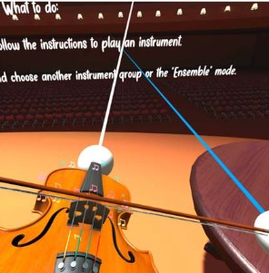

|
Patrick Tong
I am a first-year graduate student at VCAIL Lab, UNC Chapel Hill, where I work on Augmented Reality (AR) related technologies.
My research objective centers on advancing effective AR/VR solutions. In the past, I concentrated on creating AR applications for surgical guidance and VR applications for training purposes. During college, I co-founded a startup that built cryptographic protocols for the metaverse. Looking ahead, my aim is to delve into the fundamental concepts of AR, including spatial audio and displays.
Email /
Google Scholar /
Github
|
|
Research
I'm interested in spatial audio, 3D computer vision and displays. Much of my research is on the implementation and applications of the AR technology. Representative papers are highlighted.
|
|


|
Development of an Augmented Reality Guidance System for Head and Neck Cancer Resection
Guansen Tong, Jiayi Xu, Michael Pfister, Jumanh Atoum, Kavita Prasad, Alexis Miller, Michael Topf, Jie Ying Wu
(In Review) AECAI, 2023
Exploring the feasibility of an AR guidance system for resections of positive tumor margins in a cadaveric specimen. Presenting an intraoperative solution that enables surgeons to upload and visualize holographic reconstructions of resected cadaver tissues.
|

|
Experience Orchestra: Manipulating Musical Instruments in VR
Kristine Choi, Garrett Crumb, Richard Li, Raahul Natarrajan, Patrick Tong,
Ole Molvig, Bobby Bodenheimer
IEEE VR, 2022
An immersive application in
which users can experience playing orchestral instruments, either
individually or in an ensemble, in realistic ways.
|
Feel free to steal this website's source code. Do not scrape the HTML from this page itself, as it includes analytics tags that you do not want on your own website — use the github code instead. Also, consider using Leonid Keselman's Jekyll fork of this page.
|
|
{kind=link}